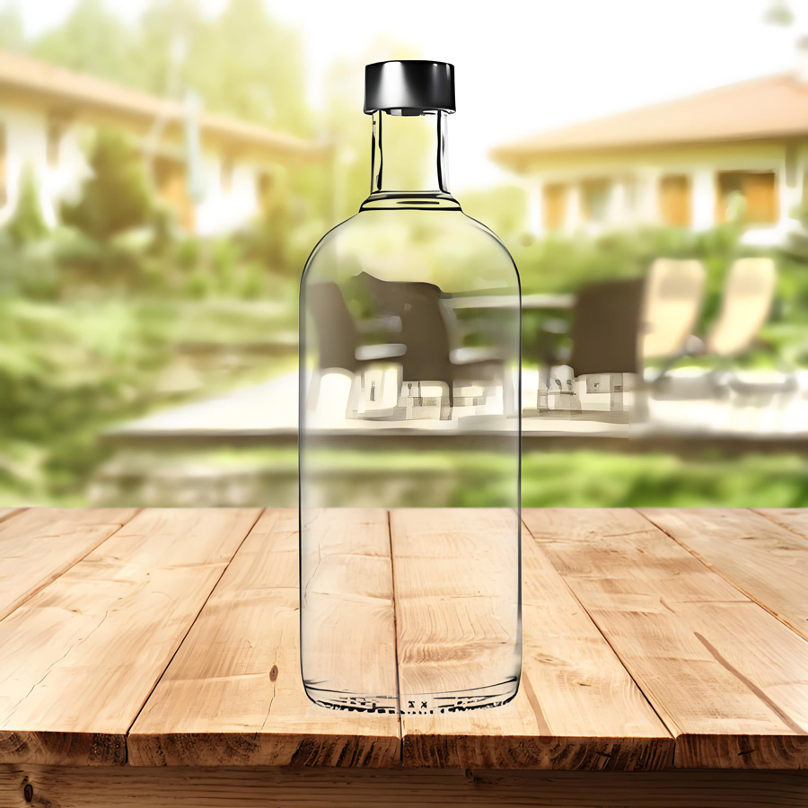

视频教程： https://youtu.be/6zOhkek1Jo4
视频中使用的素材：点击下载>> | 备用下载>>
操作步骤：
透明材质处理
复制蓝通道（通常保留最多细节）→ Ctrl+I反向（反转明暗关系）
Ctrl+L色阶调整：增强瓶身与背景的对比度（保留半透明区域细节）
瓶盖特殊处理
快速选择工具单独选中金属瓶盖 → 填充白色（保证完全抠取）
瓶身与瓶盖分层处理（瓶盖图层置于瓶身下方）
合成调色技巧
曲线调整层创建剪贴蒙版：精准控制玻璃瓶亮度
背景层置于最底部 → 通过曲线匹配环境光效
玻璃物体抠图核心在于保留透明度信息。通过通道反向+色阶调整，将玻璃瓶转换为灰度蒙版（白色为不透明区域，灰色渐变区域保留透明度）。金属瓶盖需单独处理保证边缘锐利，最后通过剪贴蒙版实现局部调光，使玻璃瓶自然融入新背景。
以下是抠玻璃瓶成品效果
